H11 Injury Statistics
실제 앱 검토 갤러리 · 아래에 명시한 SDK·기기·글자 크기의 검증과 출처 See README for preserved partial-run history.
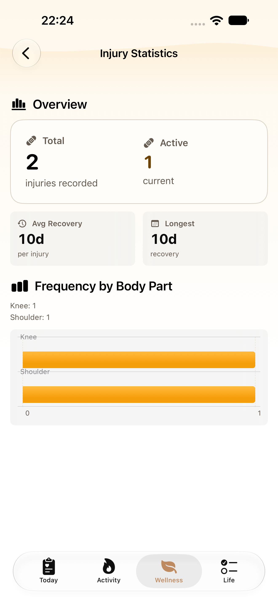
iphone-normal / H11 injury statistics frequency graph — AX
 iphone-normal / H11 injury statistics overview values — AX
iphone-normal / H11 injury statistics overview values — AX
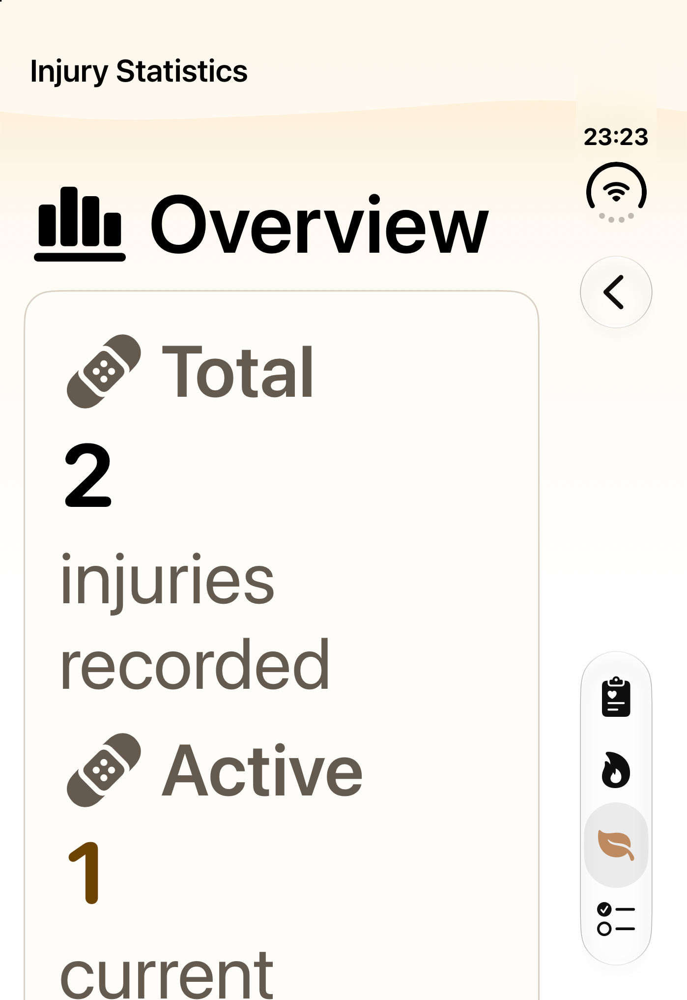
duo-closed / MAX total and active — AX
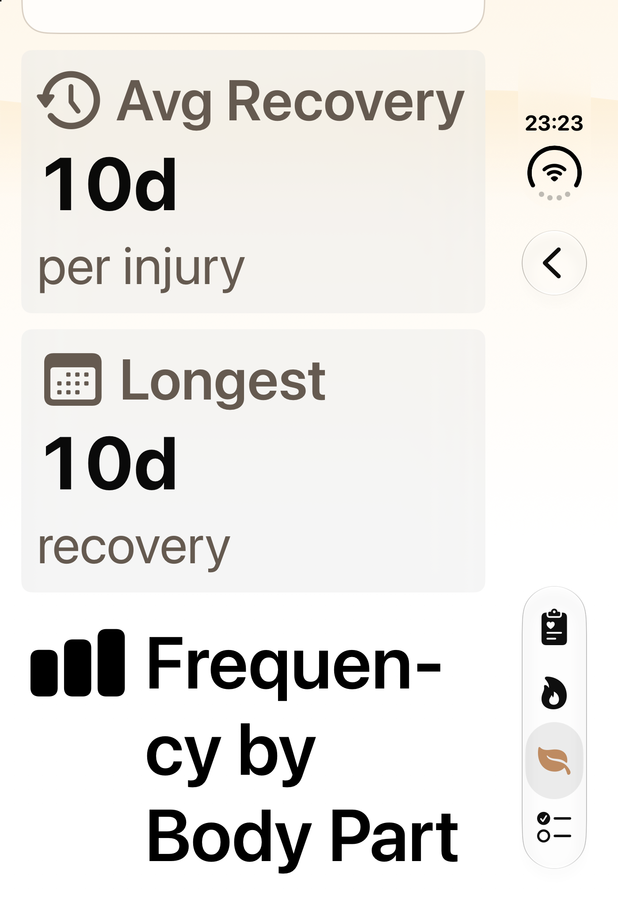
duo-closed / MAX recovery overview — AX
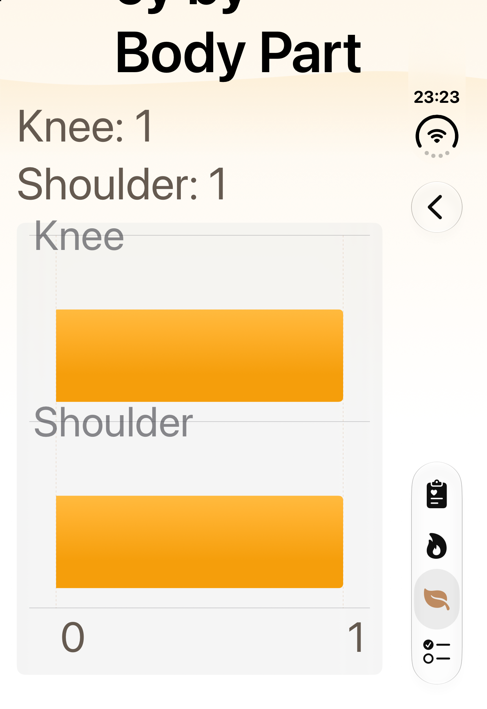
duo-closed / MAX frequency graph — AX
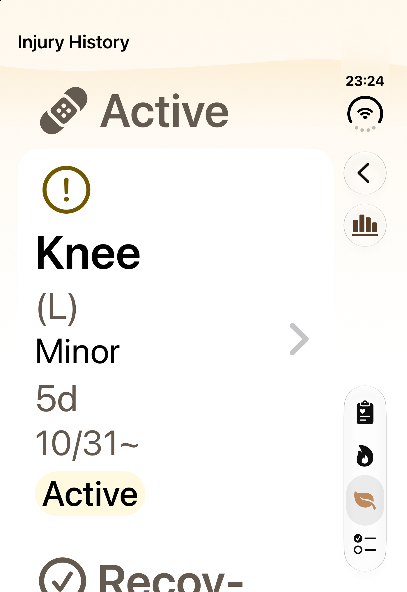
duo-closed / MAX return to Injury History — AX
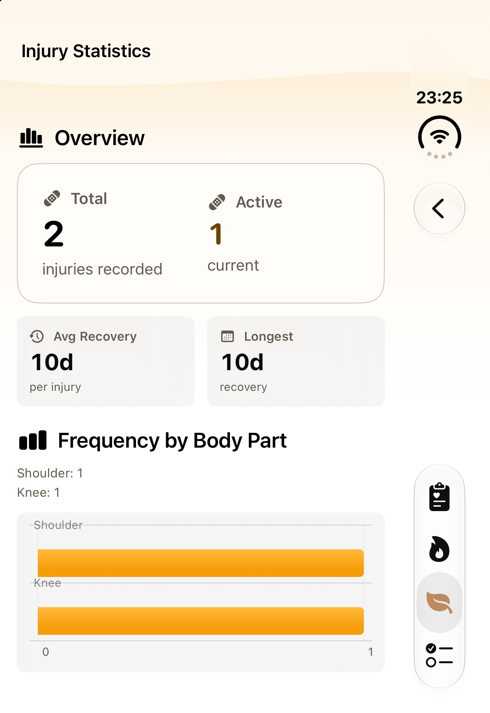
duo-closed / Overview values — AX
 duo-closed / Frequency graph — AX
duo-closed / Frequency graph — AX
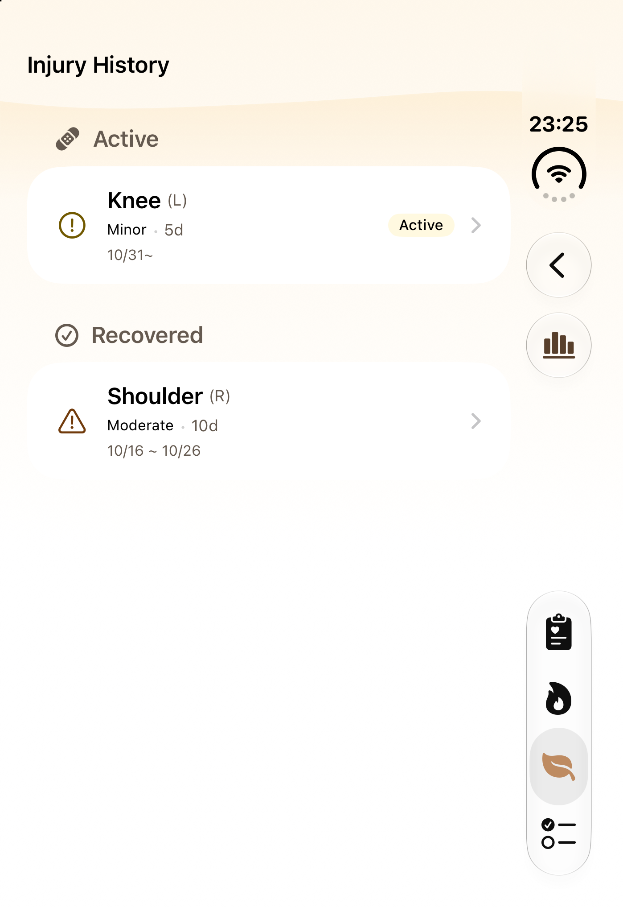
duo-closed / Normal return to Injury History — AX
 duo-open / Overview values — AX
duo-open / Overview values — AX
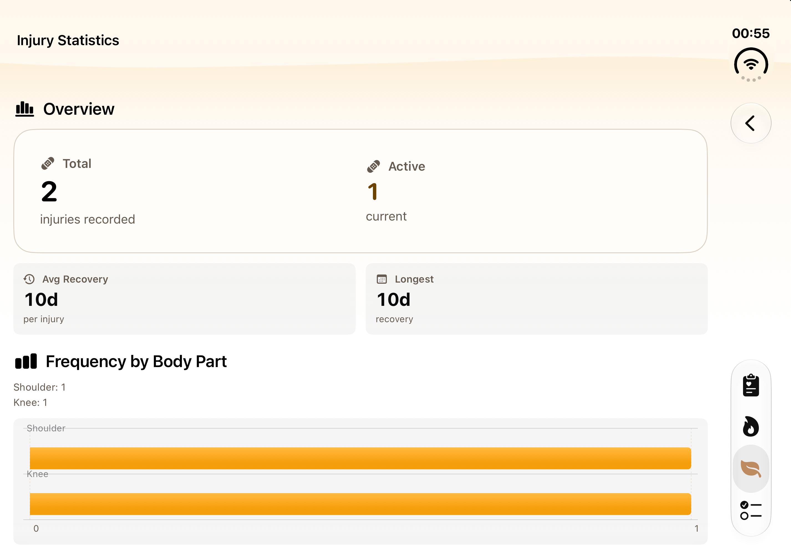
duo-open / Frequency graph — AX
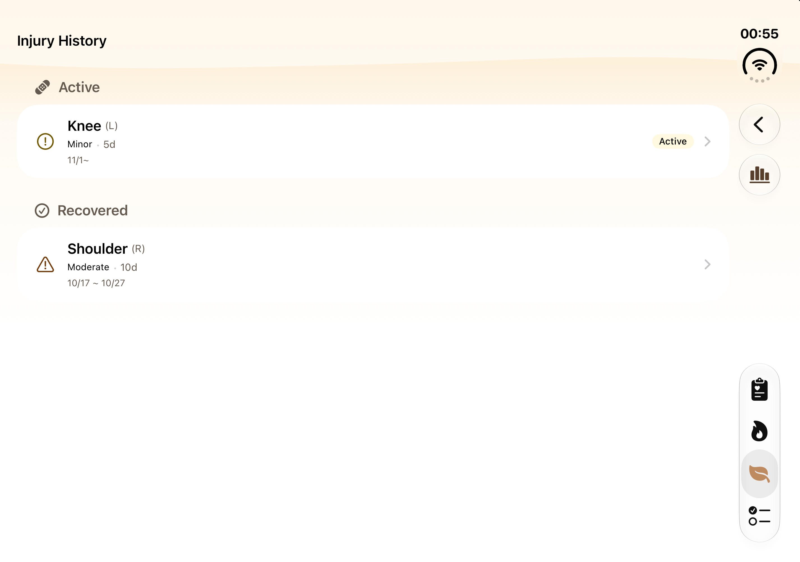
duo-open / Return to Injury History — AX
 ipad-normal / H11 injury statistics overview values — AX
ipad-normal / H11 injury statistics overview values — AX
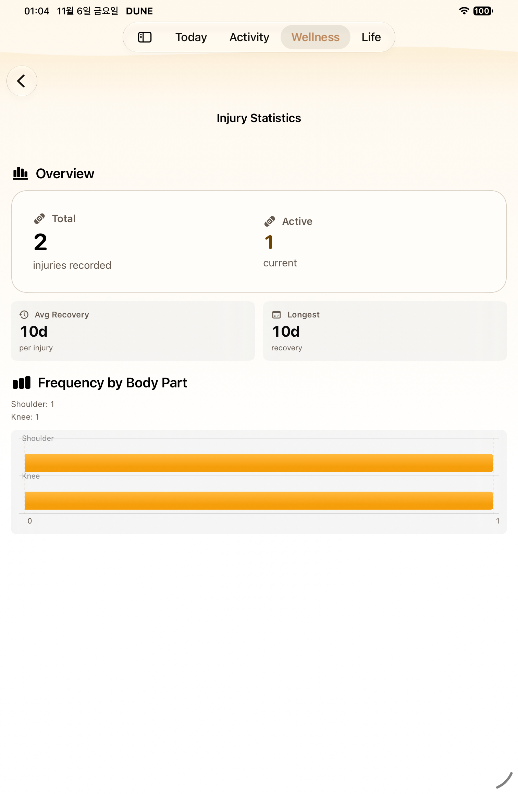
ipad-normal / H11 injury statistics frequency graph — AX
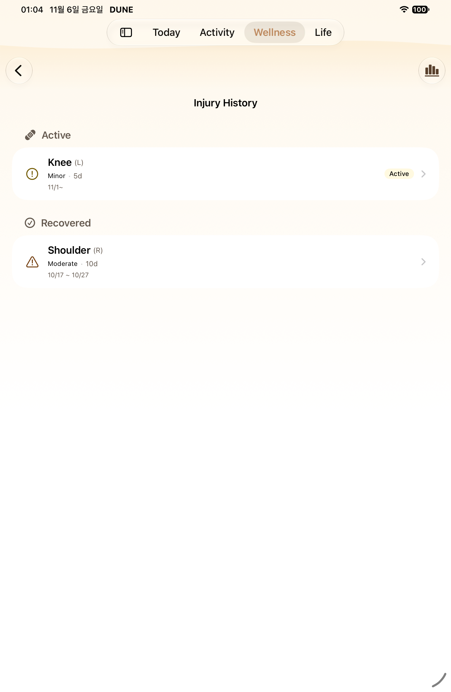
ipad-normal / tap BackButton — AX